数据链路层
基本概念
节点：主机，路由器
链路：物理通道
数据链路：逻辑通道
帧：链路层的协议数据单元，封装网络层数据报
数据链路层负责通过一条链路从一个结点向另一个物理链路直接相连的相邻结点传送数据报。
功能
- 为网络层提供服务。
- 链路管理，即连接的建立，维持，释放（用于面向连接服务）
- 组帧
- 流量控制（限制发送方）
- 差错控制（帧错/位错）
封装成帧
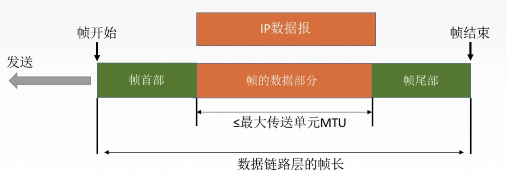
帧同步：接收方应当能从接收到的二进制比特流中区分出帧的起始和终止。
透明传输：不管所传数据是什么样的比特组合，都应当能够在链路上传送。 --- 隐藏控制信息
组帧方法：
1. 字符计数法
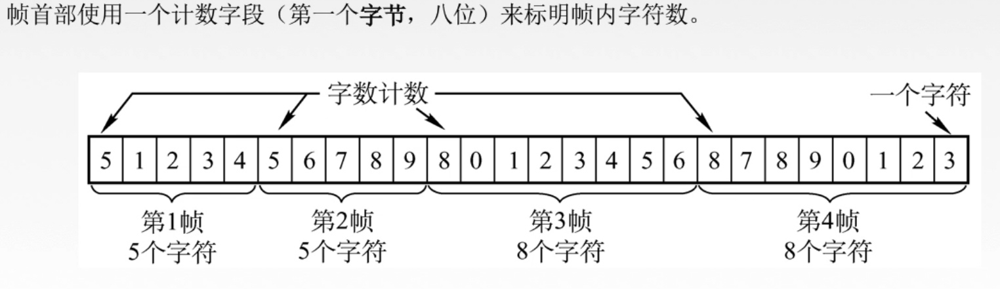
缺点：容易出错
2. 字符（节）填充法
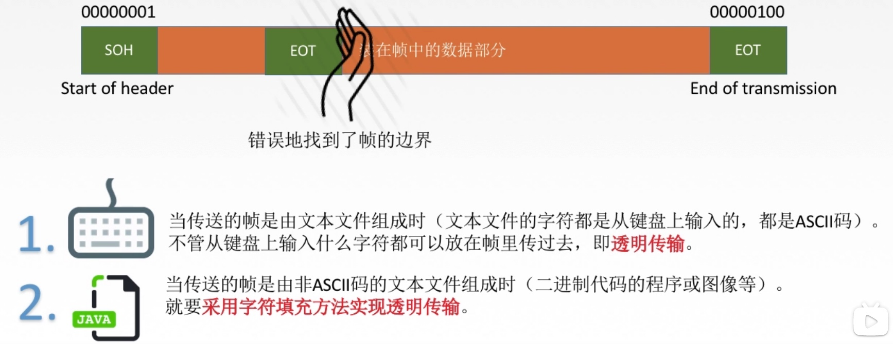
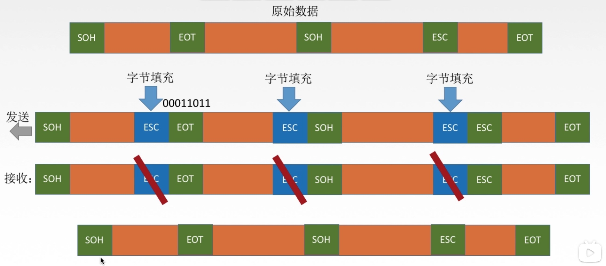
3. 零比特填充法

4. 违规编码法

总结
由于字节计数法中Count字段的脆弱性（其值若有差错将导致灾难性后果）及字符填充实现
上的复杂性和不兼容性，目前较普遍使用的帧同步法是比特填充法和违规编码法。
差错控制（比特错）
差错由来：噪声
主要解决局部性造成的差错
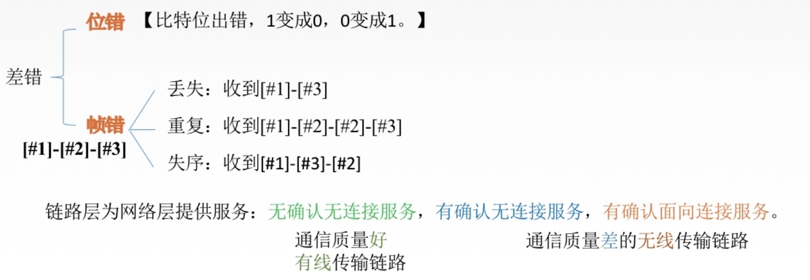
检错编码
- 奇偶校验码

- 只能检查出奇数个比特的错误，检错能力50%
- 循环冗余码CRC
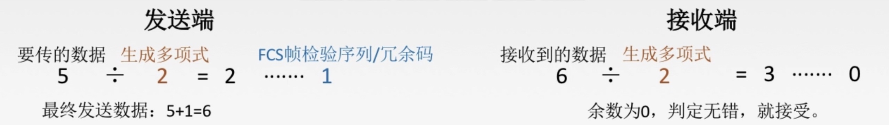
- 能够实现无比特差错的传输，但这还不是可靠传输。（错误的帧会被丢弃）
纠错编码 --- 海明码
发现双比特错，纠正单比特错。动一发而牵全身
- 确定校验码位数r：海明不等式
- 确定校验码和数据的位置
- 求出校验码的值
- 检错并纠正
总结
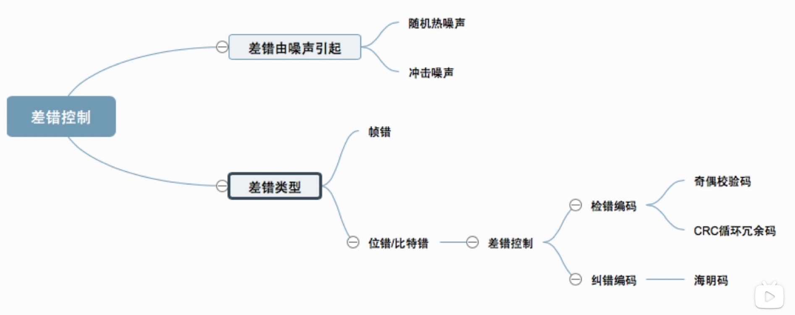
流量控制与可靠传输机制
流量控制
较高的发送速度和较低的接收能力的不匹配，会造成传输出错。
- 数据链路层的流量控制是点对点的，而传输层的流量控制是端到端的。
- 数据链路层 流量控制手段：接收方收不下就不回复确认。
传输层 流量控制手段：接收端给发送端一个窗口公告。
方法
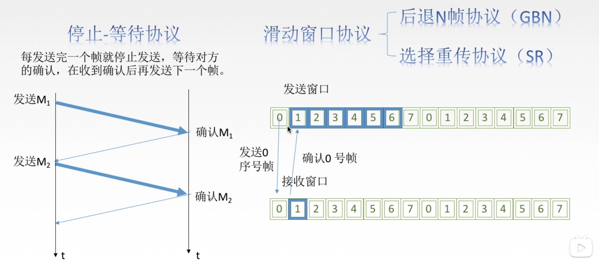
- 发送窗口与接收窗口在传输过程中是固定的。
- 发送方自动重传解决可靠传输
停止-等待协议
无差错情况
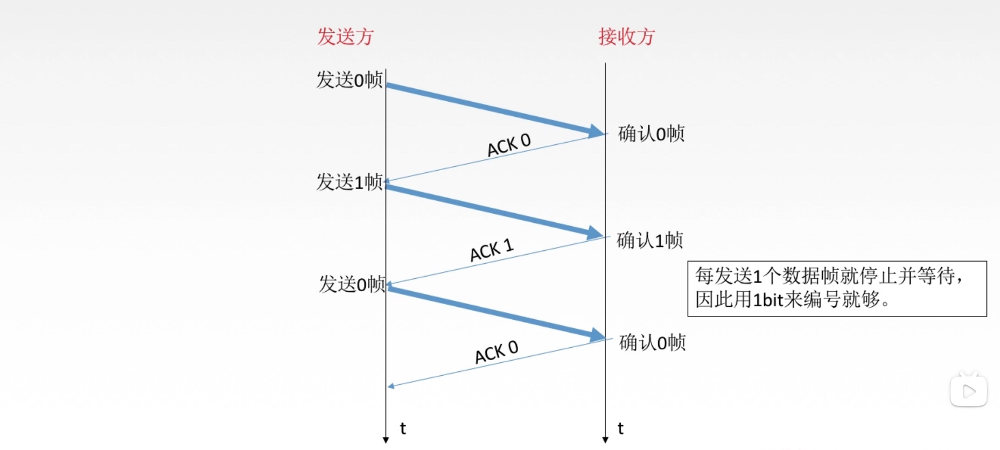
有差错情况
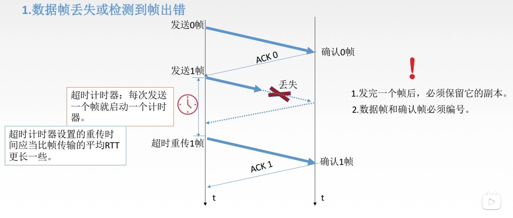
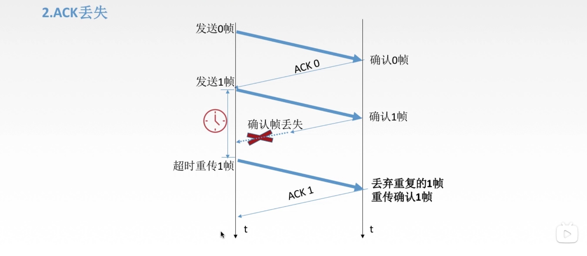
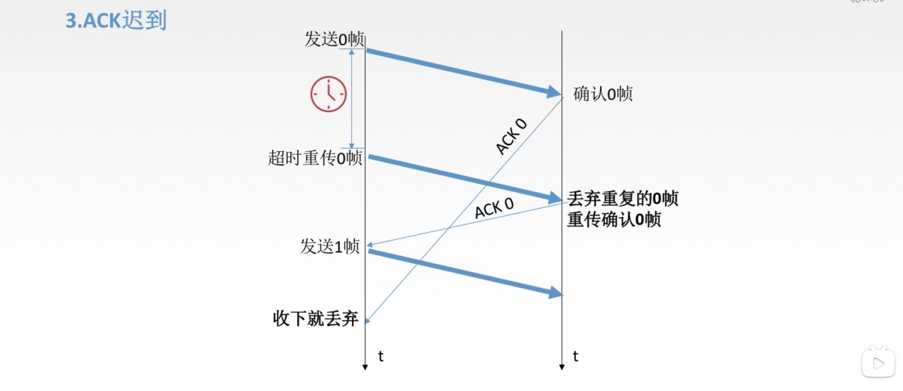
性能分析 --- 信道利用率低
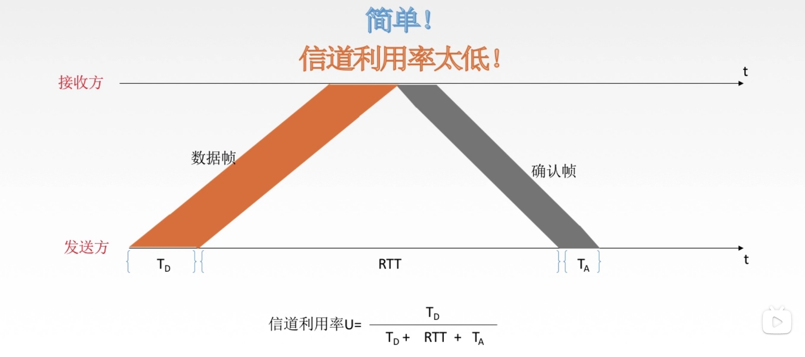
信道利用率
后退N帧协议（GBN）
- 流水线技术
- 发送窗口多个，接收窗口只有一个
滑动窗口
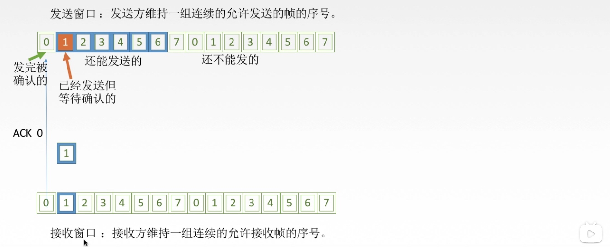
- 发送窗口大小限制：若采用n个比特对帧编号，那么发送窗口的尺寸
W应满足：1<=W<= 2^n-1。因为发送窗口尺寸过大，就会使得接收方无法区别新帧和旧帧。
注意事项
- 发送方
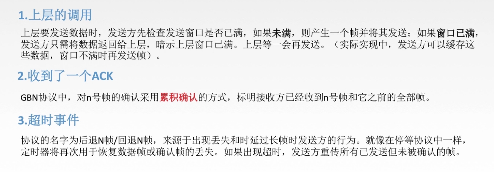
- 确认序列号最大的，按序到达的帧。 --- 累计确认
- 接收方
按序接收并返回ACK，不按序无情丢弃。
性能分析 --- 批量重传
- 好：因连续发送数据帧而提高了信道利用率
- 坏：在重传时必须把原来已经正确传送的数据帧重传，是传送效率降低。
选择重传协议（SR）
- 设置单个确认，同时加大接收窗口，设置接收缓存，缓存乱序到达的帧。
- 一般发送窗口和接收窗口设置大小相等。
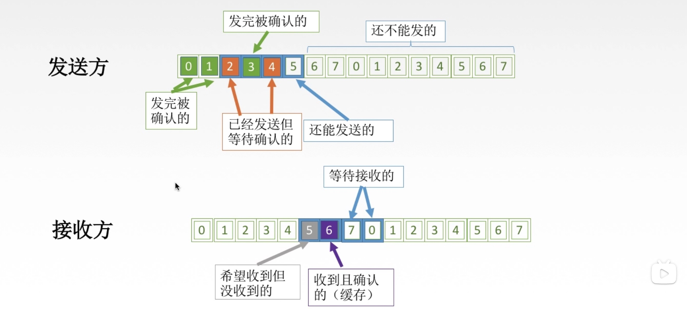
注意事项
- 发送方
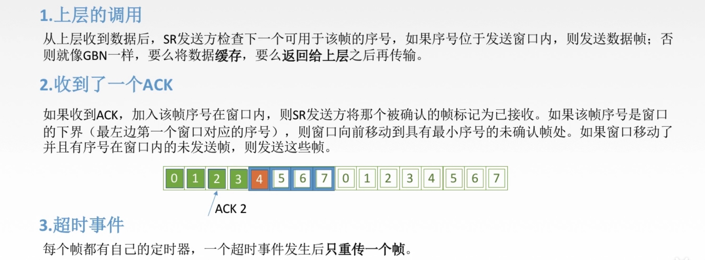
- 不在累计确认了，需每个都收到ACK
- 接收方
来者不拒（窗口内到帧）
滑动窗口长度
Wmax = 2^(n-1) n表示序号比特位
介质访问控制 -- MAC协议
MAC协议【media access control】
采取一定的措施，使得两对节点之间的通信不会发生互相干扰的情况。 --- 针对广播式链路
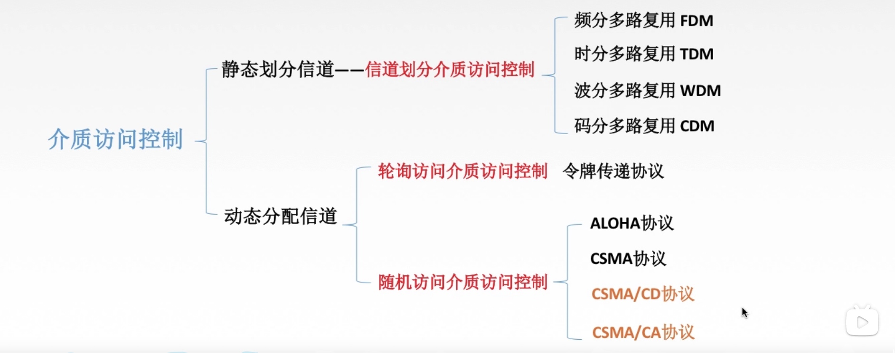
传输数据使用的两种链路
-
点对点链路：两个相邻节点通过一个链路相连，没有第三者。
应用：ppp协议，常用于广域网 -
广播式链路：所有主机共享通信介质。
应用：早期的总线以太网、无线局域网，常用于局域网
典型拓扑结构：总线型，星型 （逻辑总线型）
静态划分信道
信道划分介质访问控制：
将使用介质的每个设备与来自同一信道上的其它设备的通信隔离开，把时域和频域资源合理地事先分配给网络上的设备。 --- 主要基于多路复用技术实现
- 多路复用技术【Multiple Access Control】：
把多个信号组合在一条物理信道上进行传输，使得多个计算机或终端设备共享信道资源，提高信道利用率。 --- 实际就是把广播信道转变为点对点信道
1.FDM
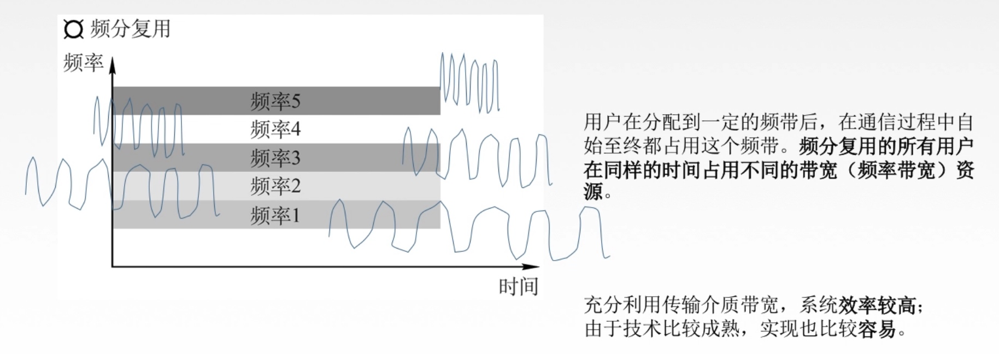
2.TDM
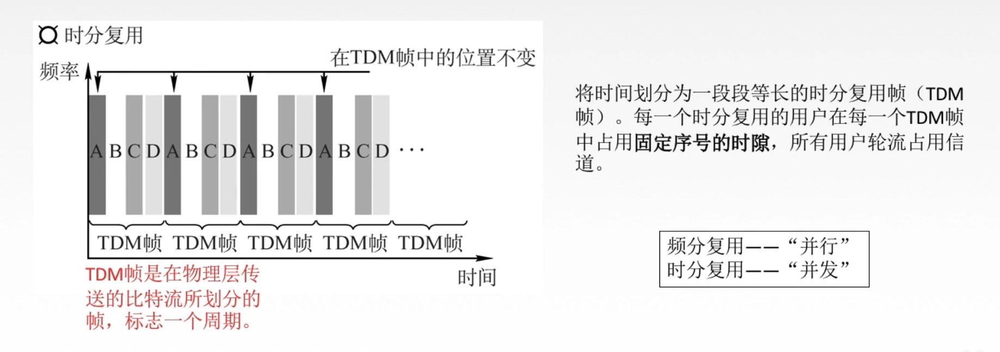
改进的TDM: 统计时分复用STDM
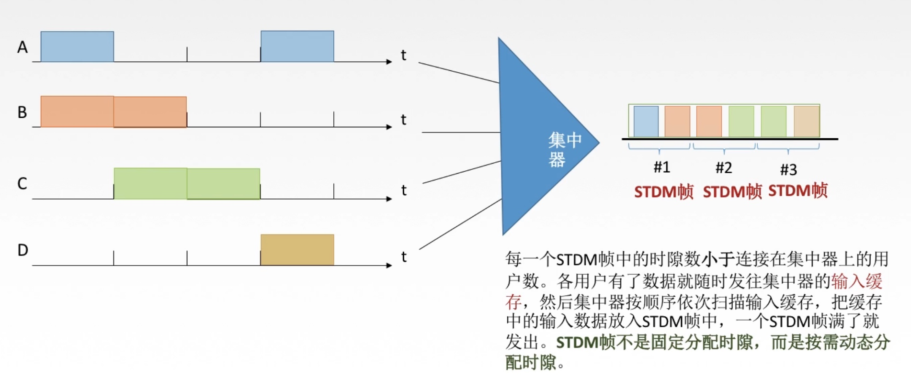
3.WDM
波分多路复用就是光的频分多路复用，在一根光纤中传输多种不同波长（频率）的光信号，由于波长（频率）不同，所以各路光信号互不干扰，最后再用波长分解复用器将各路波长分解出来。
4.CDM
码分多址(CDMA)是CDM的一种方式
【Code Division Multiple Access】
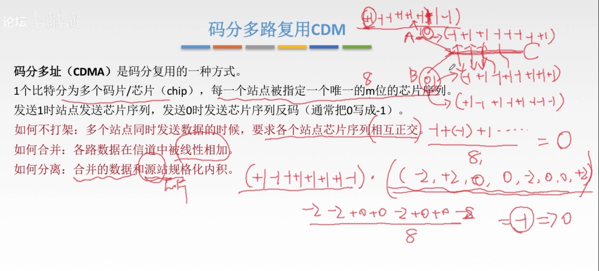
动态分配信道
动态媒体接入/多点接入
- 特点：信道并非在用户通信时固定分配给用户。
随机访问介质访问控制
所有用户可随机发送信息，发送信息时占用全部带宽
一.ALOHA协议
纯ALOHA协议：不监听信道，不按时间槽发送，随机重发。想发就发
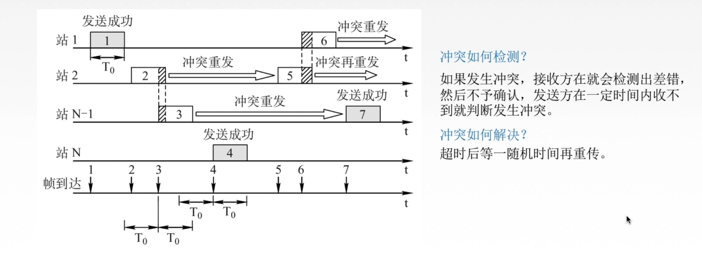
时隙ALOHA协议：把时间分成若干个相同的时间片，所有用户在时间片开始时刻同步接入网络信道，若发生冲突，则必须等到下一个时间片开始时刻再发送。控制想法就发的随意性
二.CSMA协议
ALOHA协议效率低，非常容易产生冲突
载波监听多路访问协议【carrier sense multiple access】
发送帧之前，先监听信道。
信道空闲：发送完整帧；信道忙：推迟发送
-
1-坚持CSMA：空闲则直接传输，不必等待；忙则一直监听，直到空闲马上传输。 -
非坚持CSMA：空闲则直接传输，不必等待；忙着等待一个随机的时间之后在进行监听。 -
p-坚持CSMA：空闲则以p概率直接传输，不必等待；概率1-p等待到下一个时间槽再传输；忙则等待一个随机的时间之后在进行监听。
3种方法总结对比
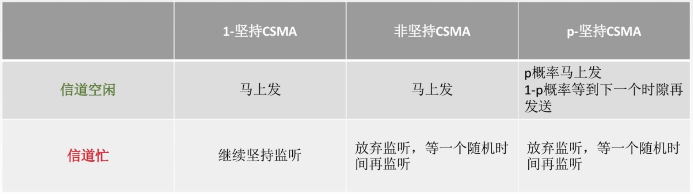
三.CSMA/CD协议
以上3种方法发生冲突后还是要坚持把数据帧发送完，需得到接收端确认帧才可判断是否冲突 --- 浪费传输资源
载波监听多点接入/碰撞检测【carrier sense multiple access with collision detection】
发送数据前和发送数据时，先监听信道
碰撞检测：便发送边监听
传播时延对载波监听的影响 --- 碰撞
只要经过2倍单程传输时延就能判断不会发生碰撞。
确定碰撞后的重传时机
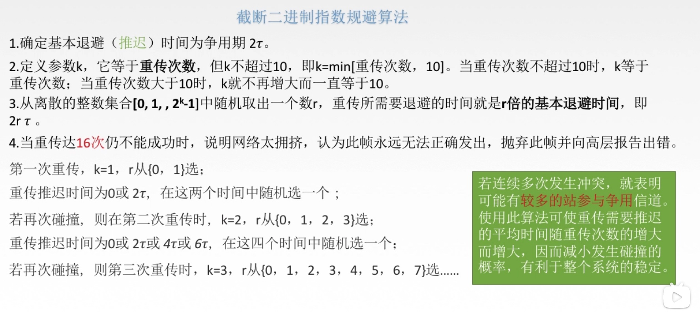
最小帧长
帧在发送完毕后才检测到发生碰撞 --- 没法判断是否异常
最小帧长 = 总线传播时延 * 数据传输速率 * 2
以太网规定最短帧长为64B，凡是长度小于64B的都是由于冲突而异常终止的无效帧。
四.CSMA/CA协议
CSMA/CA只能运用于无线局域网，CAMA/CD则常用于总线式以太网(有线网络)
载波监听多点接入/碰撞避免【carrier sense multiple access with collision avoidance】
- CA只能避免碰撞但不能检测碰撞
发送数据前，先检测信道是否空闲
空闲：发出RTS(request to send),接收端收到后，响应CTS(clear to send)
- 预约信道
- ACK帧
- RTS/CTS帧（可选）
轮询访问介质访问控制
既要不产生冲突，又要发送时占用全部带宽。
一.轮询协议
主结点轮流“邀请”从属结点发送数据。
缺点：
- 轮询开销
- 等待延迟
- 单点故障（主结点故障）
二.令牌传递协议
令牌：一个特殊格式的MAC控制帧，不含任何信息。控制信道的使用，确保同一时刻只有一个结点独占信道。（令牌环网无碰撞 --- 物理星型拓扑，逻辑环形拓扑）
每个结点都可以在一定的时间内（令牌持有时间）获得发送数据的权利，并不是无限制地持有令牌。
问题：
- 令牌开销
- 等待延迟
- 单点故障（环路中某台主机故障）
- 令牌传送方式通常用于负载较小，通信量较大的网络中。
总结3种信道划分协议
局域网
局域网【Local Area Network】：
简称
LAN，是指在某一区域内由多台计算机互联成的计算机组，使用广播通信。
基本概念和体系结构
只对应物理层和数据链路层
决定局域网的主要要素（特点）：网络拓扑，传输介质，介质访问控制方法
- 网络拓扑：星型拓扑，总线型拓扑，环形拓扑，树型拓扑
- 传输介质：有线，无线
- 介质访问控制：
- CSMA/CD：常用于总线型局域网，也用于树型网络
- 令牌总线：常用于总线型局域网，也用于树型网络
- 令牌环：用于环形局域网，如令牌环网
局域网分类
- 以太网：CSMA/CD 逻辑拓扑总线型，物理拓扑星型或拓展星型 都符合
IEEE 802.3系列标准 - 令牌环网
- FDDI网【Fiber Distributed Data Interface】
- ATM网【Asynchronous Transfer Mode】
- 无线局域网【Wireless Local Area Network；WLAN】 采用
IEEE 802.11标准
IEEE 802标准
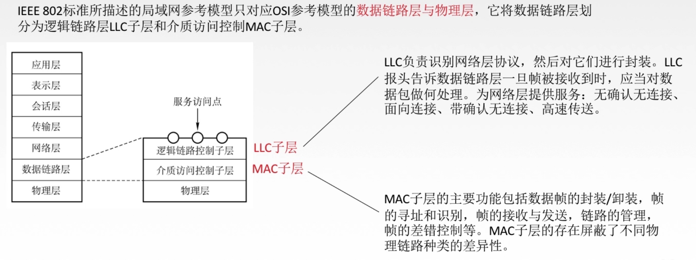
以太网
以太网【Ethernet】：
由Xerox公司创建并由Xerox、Intel和DEC公司联合开发的基带总线局域网规范，是当今现有局域网采用的最通用的通信协议标准。使用
CSMA/CD技术
拓扑结构：逻辑上总线型，物理上星型（使用集线器）
特点：
- 造价低廉
- 应用最广泛的局域网技术
- 简单
- 满足网络速率要求：10Mb/s ～ 10Gb/s
以太网的两个标准：（帧格式有略微不同）
DIX Ethernet V2：第一个局域网产品（以太网）规约IEEE 802.3：IEEE 802委员会802.3工作组制定的第一个IEEE以太网标准。
以太网提供无连接，不可靠的服务
以太网只实现无差错接收，不实现可靠传输。
无连接：发送方和接收方之间无“握手过程”
不可靠：不对发送方的数据帧编码，接收方不向发送方进行确认，差错帧直接丢弃，差错纠正由高层负责（传输层）。
MAC地址
适配器(网卡)上装有处理器和存储器(包括RAM和ROM)，ROM上由计算机硬件地址MAC地址
在局域网中，硬件地址又称为物理地址/MAC地址。【实际上是标识符】
MAC地址：全球唯一的48位二进制地址，前24位代表厂家（IEEE规定），后24位厂家自己指定。通常用6个十六进制数表示。
以太网帧
最常用的是以太网V2的格式
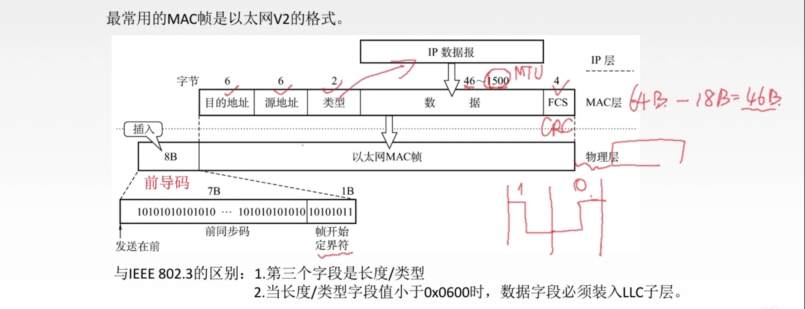
高速以太网
速率>=100Mb/s的以太网称为高速以太网（一般可实现无冲突传输）
- 100BASE-T以太网
- 吉比特以太网
- 10吉比特以太网
无线局域网
MAC帧头格式
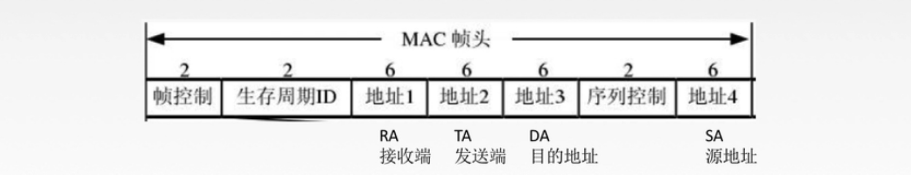
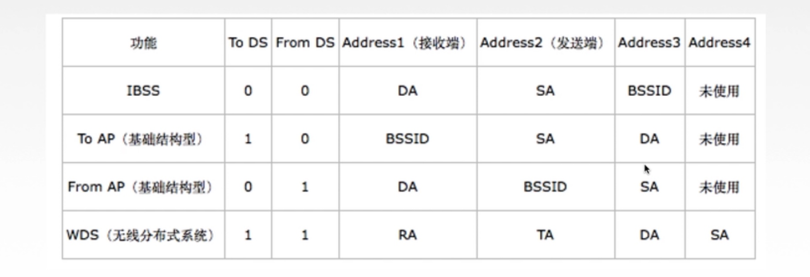
- BSS 基本服务集
- AP 基站
- DS 分配系统
分类
- 有固定基础设施无线局域网
- 无固定基础设施无线局域网的自组织网络
广域网
广域网【WAN，Wide Area Network】
通常跨接很大的物理范围。
基本概念
对应了物理层、数据链路层和网络层
广域网的通信子网主要使用分组交换技术。广域网的通信子网可以利用公用分组交换网、卫星通信网和无线分组交换网，它将分布在不同地区的局域网或计算机系统互连起来，达到资源共享的目的。
如因特网 (lnternet)是世界范围内最大的广域网。
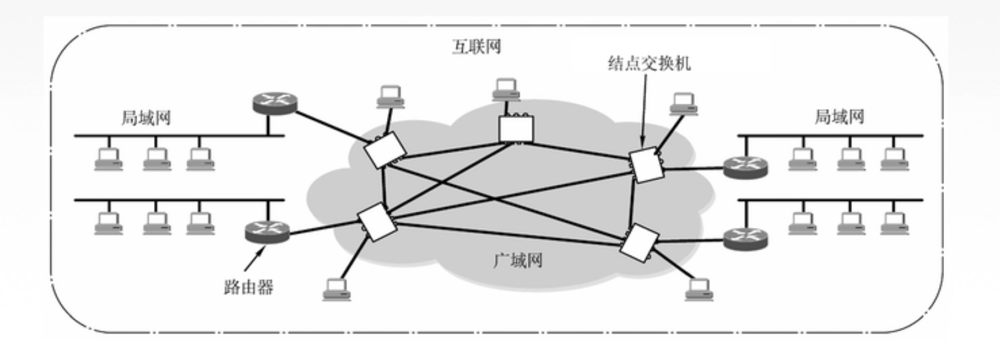
- PPP协议和HDLC协议是广域网中最常使用的两种协议 --- 都只支持全双工链路
PPP协议
点对点协议【Point-to-Point Protocol】
是目前使用最广泛的数据链路层协议，用户使用拨号电话接入因特网时一般都使用PPP协议
需要满足的要求：
- 简单：对于链路层的帧，无需纠错，无需排序，无需流量控制
- 封装成帧：帧定界符
- 透明传输：异步线路用字节填充，同步线路用比特填充。
- 多种网络层协议：封装的IP数据包可以采用多种协议。
- 多种类型链路
- 差错检测：错就丢弃
- 检测连接状态
- 最大传送单元（MTU）
- 网络层地址协商
- 数据压缩协商
组成部分
- 一个将1p数据报封装到串行链路(同步串行/异步串行）的方法。
- 链路控制协议LCP：建立并维护数据链路连接。 ---
身份验证 - 网络控制协议NCP：PPP可支持多种网络层协议，每个不同的网络层协议都要一个相应的NCP来配
置，为网络层协议建立和配置逻辑连接。
帧格式
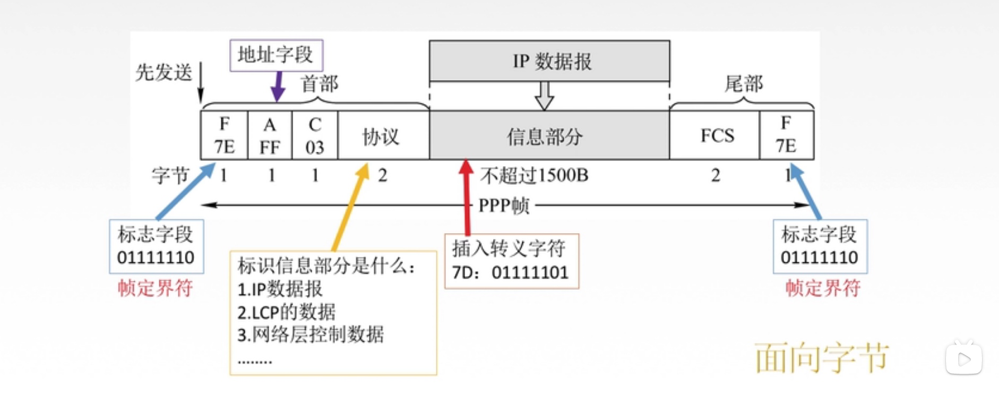
HDLC协议
高级数据链路控制【HDLC，High-Level Data Link Control】
在同步网上传输数据、面向比特的数据链路层协议。 面向比特
数据报文可透明传输，用于实现透明传输的0比特插入法易于硬件实现;所有帧采用CRC检验，对信息帧进行顺序编号，可防止漏收或重份，传输可靠性高。
站点包括：主张，从站，复合站
帧格式
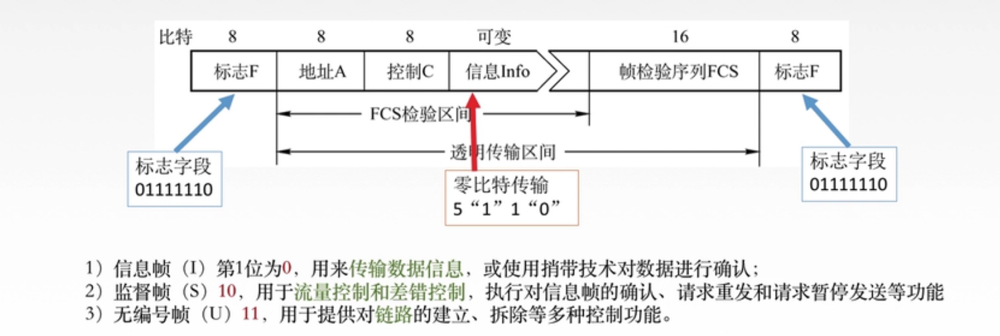
链路层设备
物理层扩展以太网
- 光纤调制器扩展
- 主干集线器
解决冲突域效率低的两种设备：
1.网桥
网桥根据MAC帧的目的地址对帧进行转发和过滤。
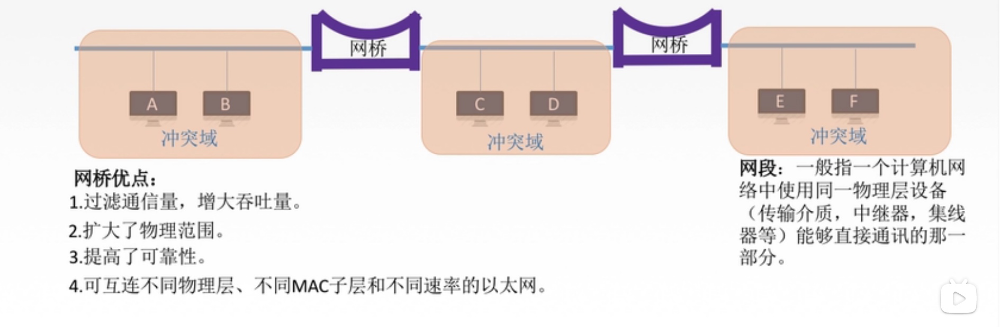
透明网桥&源路由网桥
透明网桥：“透明”指以太网上的站点并不知道所发送的帧经过哪几个网桥，是一种即插即用设备 --- 自学习
源路由网桥：在发送帧时，把详细的最佳路由信息（路由最少/时间最短）放在帧的首部中。
方法：源站以广播的方式向欲通信的目的站发送一个发现帧
2.交换机
以太网交换机可以独占传输媒体带宽。
直通式交换机&存储转发式交换机
直通式交换机: 查完目的地址（6B）就立刻转发 --- 不检错
特点：延迟小，可靠性低，无法支持具有不同速率的端口交换。
存储转发式交换机: 将帧放入高速缓存，并检查是否正确，正确则转发，错误则丢弃。
特点：延迟大，可靠性高，可以支持具有不同速率的端口交换。
冲突域&广播域
冲突域：在同一个冲突域中的每一个节点都能收到所有被发送的帧简单的说就是同一时间内只能有一台设备发送信息的范围。
广播域：网络中能接收任一设备发出的广播帧的所有设备的集合。简单的说如果站点发出个广播信号，所有能接收收到这个信号的设备范围称为一个广播域
| 能否隔离冲突域 | 能否隔离广播域 | |
|---|---|---|
| 物理层（中继器、集线器） | ❌ | ❌ |
| 链路层（网桥、交换机） | ✅ | ❌ |
| 网络层（路由器） | ✅ | ✅ |
总结
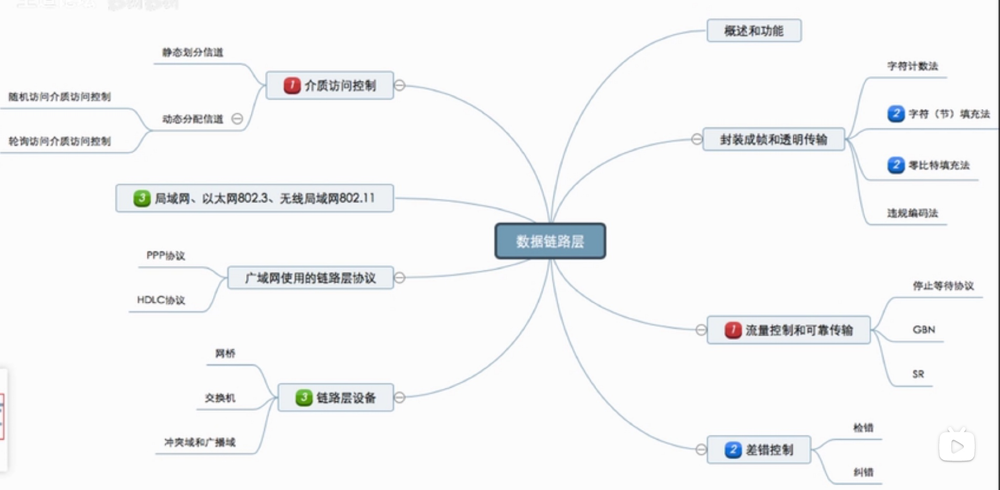